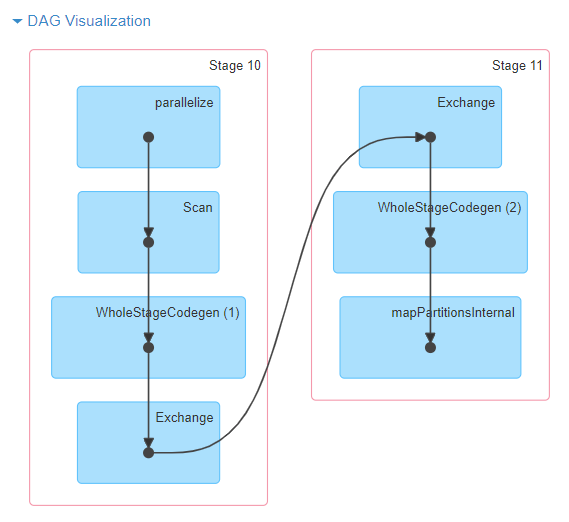

Introduction
If you’re preparing for a Data Engineering role, mastering Apache Spark is essential. But where should you focus? This guide breaks down the most frequently asked interview questions, with clear answers and code examples in PySpark.
Whether you’re a beginner or brushing up before an interview, this article is your go-to Spark checklist.
You can find a Python Notebook that you can use to practice some concepts explored in this article.
📚 Essential Concepts
Data Shuffle
Definition: Data shuffle is the process of redistributing data across partitions in a Spark cluster. It involves moving data from one executor to another over the network, which is expensive in terms of I/O, network, and serialization costs.
When it happens: Join operations, groupBy, repartitioning, distinct operations, and window functions with different partitioning keys.
Why it’s expensive: Requires disk I/O (writing intermediate files), network transfer, and serialization/deserialization of data.
Data Skew
Definition: Data skew occurs when data is unevenly distributed across partitions, causing some partitions to have significantly more data than others. This leads to performance bottlenecks where a few tasks take much longer to complete.
Example: If 80% of your data has the same key value, most data will end up in one partition while others remain nearly empty.
Impact: One slow task holds up the entire job, poor resource utilization, potential out-of-memory errors.
Partitioning
Definition: Partitioning is how Spark divides data into chunks (partitions) that can be processed in parallel across different executors. Each partition is processed by a single task.
Types:
- Hash partitioning: Default, distributes data based on hash of partition keys
- Range partitioning: Distributes data based on ranges of values
- Custom partitioning: User-defined logic for data distribution
Catalyst Optimizer
Definition: Spark’s built-in query optimization engine that automatically improves the performance of DataFrame and SQL operations by rewriting query plans before execution.
What it does: Pushes filters down, eliminates unused columns, chooses optimal join strategies, and generates efficient code.
DAG (Directed Acyclic Graph)
Definition: A logical representation of all the transformations that need to be applied to your data. It’s “directed” (has a flow direction) and “acyclic” (no loops). Spark builds this plan before executing any operations.
Purpose: Allows Spark to optimize the entire pipeline before execution and enables fault tolerance through lineage tracking.
Here is an example of DAG visualization for sc.parallelize(1 to 100).toDF.count()

Lineage
Definition: The complete chain of transformations that led to a particular dataset. Spark uses lineage information to recompute lost data partitions in case of failures, rather than restarting the entire job.
Executor vs Driver
Definition:
- Driver: The main program that coordinates the Spark application, maintains cluster state, and responds to user programs
- Executor: Worker processes that run tasks and store data for the application across the cluster
Broadcast Variables
Definition: Read-only variables that are cached and distributed to all executors in the cluster, avoiding the need to ship copies with every task. Commonly used for lookup tables or small reference datasets.
Predicate Pushdown
Definition: An optimization where filter conditions are moved as close to the data source as possible, reducing the amount of data that needs to be read and processed.
Example: Instead of reading all data then filtering, push the filter to the database/file system to read only relevant records.
Column Pruning
Definition: An optimization that reads only the columns needed for the query, rather than reading entire rows. Particularly effective with columnar formats like Parquet.
Spill
Definition: When Spark runs out of memory during operations like joins or aggregations, it temporarily writes data to disk. This is slower than in-memory processing but prevents out-of-memory errors.
Watermark (Streaming)
Definition: A threshold that tells Spark how long to wait for late-arriving data in streaming applications. Data arriving after the watermark is typically discarded.
🔹 Spark Basics (PySpark or Scala)
❓ What is Spark, and how is it different from Hadoop MapReduce?
Apache Spark is an open-source distributed data processing engine. Unlike Hadoop MapReduce, which writes data to disk between every stage, Spark performs in-memory computation, which drastically improves performance.
| Feature | Hadoop MapReduce | Apache Spark |
|---|---|---|
| Data processing | Batch only | Batch, Streaming, ML, Graph |
| Execution | Disk-based | In-memory (RAM) |
| APIs | Low-level (Java) | High-level (Python, Scala) |
| Speed | Slower due to I/O | Up to 100x faster |
| Fault tolerance | Recomputes from start | Lineage-based recovery |
❓ What’s the difference between an RDD, DataFrame, and Dataset?
| Abstraction | Description | When to Use |
|---|---|---|
| RDD (Resilient Distributed Dataset) | Low-level, untyped, fault-tolerant. Great control, but not optimized. | Complex transformations, unstructured data |
| DataFrame | High-level, structured, with schema. Optimized via Catalyst. Available in PySpark. | Most common use cases, SQL-like operations |
| Dataset | Like DataFrames but with compile-time type safety. Available only in Scala/Java. | Type-safe operations in Scala/Java |
🧠 Interview tip: Focus on DataFrames for PySpark roles, but understand when RDDs are needed.
❓ What is lazy evaluation in Spark?
Transformations in Spark (like map, filter, select) are lazy — they don’t trigger execution immediately. Instead, Spark builds a DAG (Directed Acyclic Graph) of transformations and only executes them when an action (like count() or collect()) is called.
The DAG contains:
- Logical plan: What operations to perform
- Physical plan: How to execute (join strategies, optimizations)
- Stages: Groups of tasks that can run in parallel
- Tasks: Individual units of work on data partitions
Benefits:
- Spark can optimize the execution plan (predicate pushdown, column pruning)
- Avoids redundant computation by caching intermediate results
- Enables efficient pipeline chaining and fusion
# These are lazy - no execution yet
df_filtered = df.filter(col("age") > 18)
df_selected = df_filtered.select("name", "age")
# This triggers execution of the entire pipeline
result_count = df_selected.count() # Action!❓ Difference between map(), flatMap(), and filter()?
| Method | Input → Output | Description |
|---|---|---|
map() | 1 → 1 | Transforms each element |
flatMap() | 1 → 0..n | Transforms and flattens collections |
filter() | 1 → 0 or 1 | Keeps only matching elements |
Examples:
from pyspark.sql.functions import col, split, explode
# RDD examples
rdd.map(lambda x: x * 2) # [1,2,3] → [2,4,6]
rdd.flatMap(lambda x: x.split()) # ["hello world"] → ["hello", "world"]
rdd.filter(lambda x: x > 2) # [1,2,3] → [3]
# DataFrame equivalent for flatMap
df.select(explode(split(col("text"), " ")).alias("word"))❓ What is an action in Spark? Give examples with use cases.
Actions trigger execution of the DAG and return results to the driver or write output.
| Action | Use Case | Performance Note |
|---|---|---|
count() | Get row count | Efficient, no data transfer |
collect() | Bring all data to driver | Dangerous with large datasets |
show() | Preview DataFrame | Only brings first N rows |
take(n) | Get first N rows | Better than collect() for sampling |
saveAsParquet() | Write to storage | Efficient columnar format |
write.mode("overwrite").parquet() | Overwrite existing data | Production data pipelines |
⚠️ Interview warning: Never use collect() on large datasets in production!
🔸 DataFrame API and SQL
❓ How do you read different file formats with custom schemas?
from pyspark.sql.types import StructType, StructField, StringType, IntegerType, TimestampType
from pyspark.sql.functions import col
# Define schema for better performance and type safety
schema = StructType([
StructField("id", IntegerType(), True),
StructField("name", StringType(), True),
StructField("age", IntegerType(), True),
StructField("created_at", TimestampType(), True)
])
# CSV with schema
df_csv = spark.read.csv("path/to/file.csv", schema=schema, header=True)
# JSON with schema inference
df_json = spark.read.json("path/to/file.json")
# Parquet (schema automatically inferred)
df_parquet = spark.read.parquet("path/to/file.parquet")
# Handle corrupt records
df_safe = spark.read \
.option("mode", "PERMISSIVE") \
.option("columnNameOfCorruptRecord", "_corrupt_record") \
.json("data/")❓ Difference between select() and selectExpr()?
| Method | Syntax Style | Performance | Flexibility |
|---|---|---|---|
select() | PySpark column expressions | Optimized | Type-safe |
selectExpr() | SQL strings | Optimized | Dynamic |
from pyspark.sql.functions import col, expr
# select() - structured approach
df.select(
col("name"),
(col("age") + 1).alias("age_plus_one"),
col("salary") * 1.1
)
# selectExpr() - SQL-like approach
df.selectExpr(
"name",
"age + 1 as age_plus_one",
"salary * 1.1 as adjusted_salary"
)
# expr() for complex expressions within select()
df.select(col("name"), expr("case when age > 18 then 'adult' else 'minor' end as category"))❓ How do you use window functions in Spark?
Window functions are crucial for analytics and ranking operations.
from pyspark.sql.window import Window
from pyspark.sql.functions import row_number, rank, dense_rank, lag, lead, sum as spark_sum
# Define window specifications
user_window = Window.partitionBy("user_id").orderBy(col("timestamp").desc())
running_total_window = Window.partitionBy("user_id").orderBy("timestamp").rowsBetween(Window.unboundedPreceding, Window.currentRow)
# Common window functions
df_with_windows = df.withColumn("row_num", row_number().over(user_window)) \
.withColumn("rank", rank().over(user_window)) \
.withColumn("prev_amount", lag("amount", 1).over(user_window)) \
.withColumn("running_total", spark_sum("amount").over(running_total_window))
# Get latest record per user (common interview question)
latest_per_user = df.withColumn("rn", row_number().over(user_window)) \
.filter(col("rn") == 1) \
.drop("rn")❓ Advanced groupBy() and aggregations
from pyspark.sql.functions import count, sum, avg, max, min, collect_list, stddev
# Basic aggregations
df.groupBy("user_id").agg(
count("*").alias("n_orders"),
sum("amount").alias("total_spent"),
avg("amount").alias("avg_order"),
max("amount").alias("largest_order")
).show()
# Multiple grouping columns with conditional aggregation
df.groupBy("user_id", "category").agg(
count("*").alias("orders_count"),
sum(expr("case when status = 'completed' then amount else 0 end")).alias("completed_revenue"),
collect_list("product_name").alias("products_ordered")
).show()
# Pivot tables (common in interviews)
df.groupBy("user_id").pivot("category").sum("amount").show()❓ How to handle date/time operations?
from pyspark.sql.functions import to_timestamp, date_format, year, month, dayofweek, datediff, current_timestamp
# Parse timestamps
df = df.withColumn("created_at", to_timestamp("created_at_str", "yyyy-MM-dd HH:mm:ss"))
# Extract date parts
df = df.withColumn("year", year("created_at")) \
.withColumn("month", month("created_at")) \
.withColumn("day_of_week", dayofweek("created_at"))
# Date arithmetic
df = df.withColumn("days_since_creation", datediff(current_timestamp(), "created_at"))
# Format dates for output
df = df.withColumn("formatted_date", date_format("created_at", "MMM dd, yyyy"))🔸 Performance and Optimization
❓ What is the Catalyst Optimizer and how does it work?
Spark’s Catalyst Optimizer is a rule-based optimization engine that transforms logical plans into efficient physical execution plans.
Optimization phases:
- Logical Plan Creation: Parse SQL/DataFrame operations
- Logical Plan Optimization: Apply rules like predicate pushdown, constant folding
- Physical Plan Generation: Choose join algorithms, access methods
- Code Generation: Generate efficient Java bytecode
Key optimizations:
- Predicate pushdown: Move filters closer to data source
- Projection pushdown: Only read required columns (especially important for Parquet)
- Constant folding: Evaluate constants at compile time
- Join reordering: Choose optimal join order based on statistics
❓ What causes shuffles and how to minimize them?
Shuffle-causing operations:
- Joins (except broadcast joins)
- GroupBy and aggregations
- Repartitioning operations
- Distinct operations
- Window functions with different partitioning
Minimization strategies:
# 1. Use broadcast joins for small tables
from pyspark.sql.functions import broadcast
large_df.join(broadcast(small_df), "key")
# 2. Pre-partition data by join keys
df.write.partitionBy("user_id").parquet("partitioned_data/")
# 3. Use coalesce instead of repartition when reducing partitions
df.coalesce(10).write.parquet("output/") # Better than repartition(10)
# 4. Combine operations to reduce shuffle stages
df.groupBy("user_id").agg(sum("amount")).filter(col("sum(amount)") > 1000)
# Equivalent SQL
# spark.sql("SELECT user_id, SUM(amount) FROM df GROUP BY user_id HAVING sum(amount) > 1000")❓ How to detect and fix data skew?
Detection methods:
# Check partition sizes
df.rdd.mapPartitions(lambda iterator: [sum(1 for _ in iterator)]).collect()
# Analyze key distribution
df.groupBy("skewed_key").count().orderBy(col("count").desc()).show()Skew mitigation techniques:
# 1. Salting technique for skewed joins
from pyspark.sql.functions import rand, concat, lit
# Add salt to skewed side
df_skewed_salted = df_skewed.withColumn("salted_key",
concat(col("key"), lit("_"), (rand() * 10).cast("int")))
# Replicate smaller side
df_small_replicated = df_small.withColumn("salt", lit(range(10))) \
.select("*", concat(col("key"), lit("_"), col("salt")).alias("salted_key"))
# Join on salted keys
result = df_skewed_salted.join(df_small_replicated, "salted_key")
# 2. Isolated broadcast map for hot keys
hot_keys = ["key1", "key2", "key3"] # Identified hot keys
df_hot = df.filter(col("key").isin(hot_keys))
df_normal = df.filter(~col("key").isin(hot_keys))
# Process separately and union results❓ Memory management and configuration tuning
Spark memory allocation:
- Execution memory: Shuffles, joins, aggregations (60% of heap by default)
- Storage memory: Caching, broadcasts (40% of heap by default)
- User memory: User data structures, internal metadata (40% of heap)
Critical tuning parameters:
# Executor configuration
spark.executor.memory=4g
spark.executor.cores=4
spark.executor.instances=10
# Memory fractions
spark.memory.fraction=0.8 # Fraction for Spark (vs user memory)
spark.memory.storageFraction=0.5 # Storage vs execution memory
# Shuffle configuration
spark.sql.shuffle.partitions=200 # Default partitions for shuffles
spark.sql.adaptive.enabled=true # Enable Adaptive Query Execution
spark.sql.adaptive.coalescePartitions.enabled=true
# Broadcast join threshold
spark.sql.autoBroadcastJoinThreshold=10MBMonitoring memory usage:
# Check current Spark configuration
spark.conf.get("spark.executor.memory")
# Cache with different storage levels
from pyspark import StorageLevel
df.persist(StorageLevel.MEMORY_AND_DISK_SER) # Serialized, spills to disk🔹 Advanced / Real-World Scenarios
❓ Describe a real case where you had to optimize a Spark pipeline
Scenario: Processing 10TB daily transaction data with severe performance issues.
Problem identification:
- Spark UI showed 99% of time spent in one stage
- Few tasks taking 10x longer than others
- High GC pressure and OOM errors
Investigation process:
# 1. Analyzed data distribution
df.groupBy("customer_id").count().describe().show()
# Found: 80% of transactions belonged to 5% of customers
# 2. Checked partition sizes
partition_sizes = df.rdd.mapPartitions(lambda x: [sum(1 for _ in x)]).collect()
print(f"Partition size variance: {max(partition_sizes)/min(partition_sizes)}")
# Found: 1000x variance in partition sizesSolution implemented:
# 1. Salting for skewed joins
def add_salt(df, key_col, salt_range=100):
return df.withColumn("salt", (rand() * salt_range).cast("int")) \
.withColumn("salted_key", concat(col(key_col), lit("_"), col("salt")))
# 2. Two-phase aggregation for skewed groupBy
# Phase 1: Local aggregation with salt
local_agg = df.withColumn("salt", (rand() * 100).cast("int")) \
.groupBy("customer_id", "salt") \
.agg(sum("amount").alias("partial_sum"))
# Phase 2: Global aggregation
final_agg = local_agg.groupBy("customer_id") \
.agg(sum("partial_sum").alias("total_amount"))
# 3. Broadcast dimension tables
customer_broadcast = broadcast(customer_df)
result = transaction_df.join(customer_broadcast, "customer_id")Results:
- Runtime reduced from 4 hours to 45 minutes
- Eliminated OOM errors
- More consistent task execution times
❓ How to handle schema evolution in production?
# 1. Schema merging for Parquet
df = spark.read.option("mergeSchema", "true").parquet("evolving_data/")
# 2. Graceful schema handling
def safe_read_with_schema_evolution(path, expected_schema):
try:
# Try reading with expected schema
df = spark.read.schema(expected_schema).parquet(path)
except Exception:
# Fall back to schema inference
df = spark.read.parquet(path)
# Add missing columns with defaults
for field in expected_schema.fields:
if field.name not in df.columns:
df = df.withColumn(field.name, lit(None).cast(field.dataType))
return df.select(*[col(f.name) for f in expected_schema.fields])
# 3. Schema registry integration (conceptual)
def get_schema_from_registry(topic, version="latest"):
# In real implementation, integrate with Confluent Schema Registry
# or similar service
pass❓ How to ensure pipeline idempotency and reliability?
# 1. Idempotent writes with unique run IDs
from datetime import datetime
import uuid
def write_with_idempotency(df, base_path, partition_cols=None):
run_id = str(uuid.uuid4())
timestamp = datetime.now().strftime("%Y%m%d_%H%M%S")
temp_path = f"{base_path}_temp_{run_id}"
final_path = f"{base_path}/{timestamp}"
# Write to temporary location first
writer = df.write.mode("overwrite")
if partition_cols:
writer = writer.partitionBy(*partition_cols)
writer.parquet(temp_path)
# Atomic move (if supported by filesystem)
# spark.sql(f"CREATE TABLE final_table USING PARQUET LOCATION '{final_path}' AS SELECT * FROM parquet.`{temp_path}`")
return final_path
# 2. Checkpointing for fault tolerance
def process_with_checkpointing(df, checkpoint_path):
df.write.mode("overwrite").option("checkpointLocation", checkpoint_path) \
.format("delta").saveAsTable("processed_data")
# 3. Data quality checks
def validate_data_quality(df, expected_count_range=None):
count = df.count()
# Check for null values in critical columns
null_checks = df.select([sum(col(c).isNull().cast("int")).alias(c)
for c in df.columns]).collect()[0]
# Validate row count
if expected_count_range:
min_count, max_count = expected_count_range
assert min_count <= count <= max_count, f"Row count {count} outside expected range"
# Log quality metrics
print(f"Data quality report: {count} rows, null counts: {null_checks}")
return df❓ Production monitoring and alerting
Key metrics to monitor:
# 1. Job-level metrics
job_metrics = {
"duration": "Total job execution time",
"shuffle_read_bytes": "Data shuffled across network",
"shuffle_write_bytes": "Data written for shuffles",
"input_size": "Input data size",
"num_tasks": "Total tasks executed",
"failed_tasks": "Number of failed tasks"
}
# 2. Executor-level metrics
executor_metrics = {
"gc_time": "Time spent in garbage collection",
"memory_used": "Heap memory utilization",
"disk_used": "Disk spill amount",
"active_tasks": "Currently running tasks"
}
# 3. Custom application metrics
def log_custom_metrics(df, stage_name):
row_count = df.count()
# Log to external monitoring system
metrics = {
"stage": stage_name,
"row_count": row_count,
"timestamp": datetime.now(),
"processing_rate": row_count / execution_time
}
# Send to monitoring service (Prometheus, Datadog, etc.)
# monitoring_client.gauge("spark.pipeline.rows_processed", row_count, tags={"stage": stage_name})Setting up alerts:
- High GC time: > 30% of executor time
- Task failures: > 5% failure rate
- Data skew: Task duration variance > 10x
- Memory pressure: > 90% heap utilization
- Processing delay: Job duration > 2x baseline
🎯 Bonus: Streaming and Advanced Topics
❓ Structured Streaming fundamentals
# Read from Kafka
df = spark.readStream \
.format("kafka") \
.option("kafka.bootstrap.servers", "localhost:9092") \
.option("subscribe", "input_topic") \
.load()
# Parse JSON data
from pyspark.sql.functions import from_json
schema = StructType([StructField("user_id", StringType()),
StructField("amount", DoubleType())])
parsed_df = df.select(from_json(col("value").cast("string"), schema).alias("data")) \
.select("data.*")
# Windowed aggregation
windowed_counts = parsed_df \
.withWatermark("timestamp", "10 minutes") \
.groupBy(window(col("timestamp"), "5 minutes"), "user_id") \
.count()
# Output to console (for testing)
query = windowed_counts.writeStream \
.outputMode("update") \
.format("console") \
.trigger(processingTime="30 seconds") \
.start()
query.awaitTermination()❓ Delta Lake integration
# Write Delta table
df.write.format("delta").mode("overwrite").saveAsTable("user_transactions")
# Time travel queries
yesterday_df = spark.read.format("delta") \
.option("timestampAsOf", "2024-01-01") \
.table("user_transactions")
# Upsert (merge) operations
from delta.tables import DeltaTable
delta_table = DeltaTable.forName(spark, "user_transactions")
delta_table.alias("target").merge(
updates_df.alias("source"),
"target.user_id = source.user_id"
).whenMatchedUpdateAll() \
.whenNotMatchedInsertAll() \
.execute()✅ Final Interview Tips
What interviewers really want to see:
- System thinking: Understanding trade-offs between different approaches
- Problem-solving: How you debug performance issues and data quality problems
- Production awareness: Monitoring, error handling, and reliability considerations
- Optimization mindset: When and how to tune Spark applications
Quick review checklist:
- ✅ Lazy evaluation and DAG construction
- ✅ DataFrame vs RDD trade-offs
- ✅ Shuffle operations and minimization strategies
- ✅ Data skew detection and mitigation
- ✅ Memory management and configuration tuning
- ✅ Window functions and complex aggregations
- ✅ Real-world optimization case studies
- ✅ Production monitoring and reliability patterns
Practice scenarios:
- Optimize a slow join between large datasets
- Design a pipeline for handling late-arriving data
- Debug memory issues in a production Spark job
- Implement data quality checks and alerting
Master these concepts with hands-on practice, and you’ll not only ace your interviews — you’ll be ready to build robust, scalable data pipelines in production.
Link to the Jupyter notebook if you want to practice.